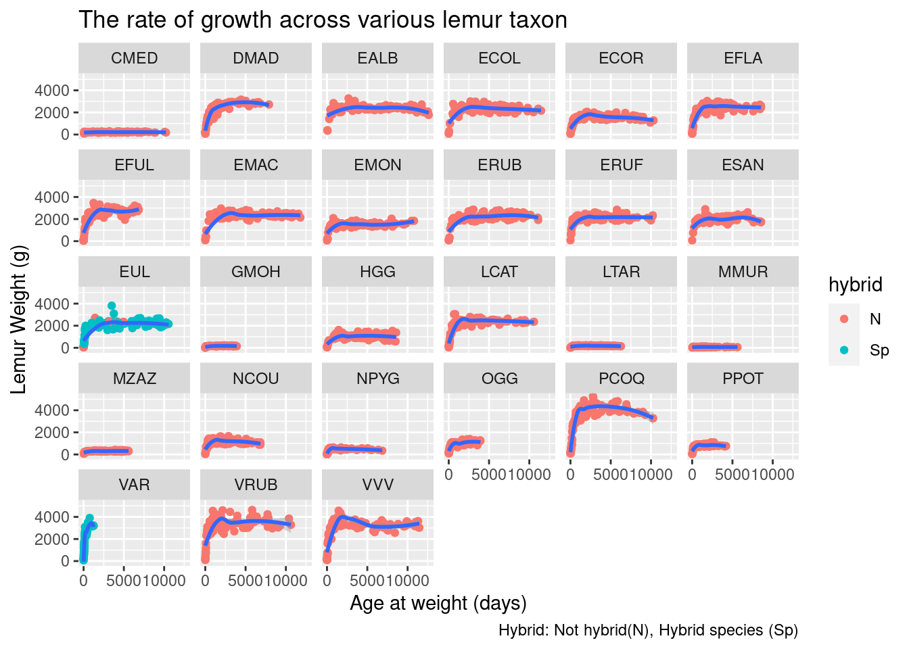
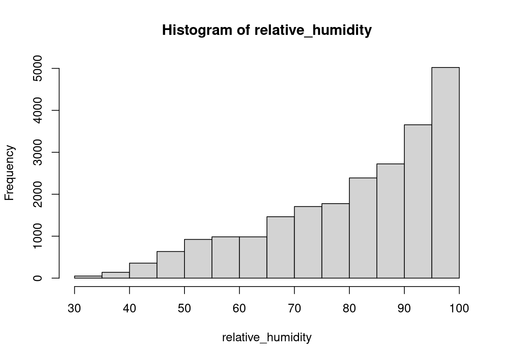
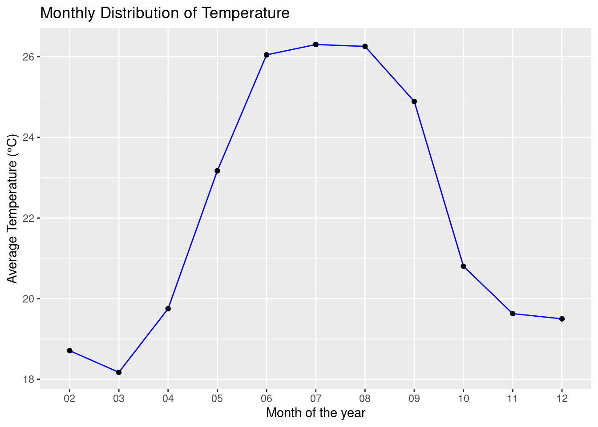

Lemur data Visualization with Tidyverse
APM: Data Mgt Project by Oluwatobi Bello

Lemur
Why Study Lemur
Lemurs represent the most endangered category of mammals worldwide, with 95% of lemur species facing the threat of extinction. Our goal is to study everything about lemur, because the more we learn, the better we can work to save them from extinction.
Source of Data
Lemur are endemic only to Madagascar, so once lemurs are gone from Madagascar, they are gone from the wild. This data was from the DLC database. The Duke Lemur Center houses over 200 lemurs across 14 species – the most diverse population of lemurs on Earth, outside their native Madagascar.
Data Visualization
Import Data and Packages
The data had been cleaned before importing, no need to import janitor. This Data contained 27 taxons in acronyms, In tidytuesday lemur-page we can check their full meaning.
library(tidyverse)── Attaching core tidyverse packages ──────────────────────── tidyverse 2.0.0 ──
✔ dplyr 1.1.4 ✔ readr 2.1.5
✔ forcats 1.0.0 ✔ stringr 1.5.1
✔ ggplot2 3.4.4 ✔ tibble 3.2.1
✔ lubridate 1.9.3 ✔ tidyr 1.3.1
✔ purrr 1.0.2
── Conflicts ────────────────────────────────────────── tidyverse_conflicts() ──
✖ dplyr::filter() masks stats::filter()
✖ dplyr::lag() masks stats::lag()
ℹ Use the conflicted package (<http://conflicted.r-lib.org/>) to force all conflicts to become errors#library(janitor)
My_data <- readr::read_csv('https://raw.githubusercontent.com/rfordatascience/tidytuesday/master/data/2021/2021-08-24/lemur_data.csv')Rows: 82609 Columns: 54
── Column specification ────────────────────────────────────────────────────────
Delimiter: ","
chr (19): taxon, dlc_id, hybrid, sex, name, current_resident, stud_book, es...
dbl (27): birth_month, litter_size, expected_gestation, concep_month, dam_a...
date (8): dob, estimated_concep, dam_dob, sire_dob, dod, weight_date, conce...
ℹ Use `spec()` to retrieve the full column specification for this data.
ℹ Specify the column types or set `show_col_types = FALSE` to quiet this message.Visualize the taxon distribution
This Bar Chart reveal the proportion of various taxon in DLC.
My_data |>
distinct(dlc_id, .keep_all = TRUE) |>
ggplot(aes(y=fct_infreq(taxon), fill=birth_type)) +
labs(y = "Taxon of lemur", x = "Lemur taxon Count",
title = "Distribution of lemur taxon showing the type of birth",
caption = "Birth Type: captive-born (CB), wild-born (WB) and unknown (UNK)") +
geom_bar() From the above chart, it shown that we have some lemur are from a unknown source and some from the wild. So, i would like to limit my study to those born in the DLC institution.
Lemur Born in the DLC
Let us restrict our search to those born at the Duke Lemur Center, because they are subjected to the same treatment, nutrition and housing condition.
my_data <-
My_data |>
filter(birth_institution == "Duke Lemur Center")Growth rate
Growth rate of the lemur taxon
With random sampling of 100 Species of each taxon, let’s view their growth rate. By plotting age to weight
my_data |>
group_by(taxon) |>
sample_n(100) |>
ggplot(aes(x= age_at_wt_d, y= weight_g)) +
geom_point(aes(color = hybrid)) +
labs(x = "Age at weight (days)", y = "Lemur Weight (g)",
title = "The rate of growth across various lemur taxon",
caption = "Hybrid: Not hybrid(N), Hybrid species (Sp)") +
geom_smooth(method = 'loess', formula = 'y ~ x') +
facet_wrap(~taxon)
From the above plot, we noticed that there is variation in growth rate across the lemur taxon and only two taxons are hybrids.
The Growth rate of four lemur taxon
my_data |>
filter(taxon %in% c("PCOQ", "VVV", "EMON", "OGG")) |>
group_by(taxon) |>
sample_n(100) |>
ggplot(aes(x= age_at_wt_d, y= weight_g)) +
geom_point(aes(color = sex)) +
labs(x = "Age at weight (days)", y = "Lemur Weight (g)",
title = "The rate of growth across various lemur taxon") +
geom_smooth(method = 'loess', formula = 'y ~ x') +
facet_wrap(~taxon)
The above scatter plot reveal that there is no significant difference between female and male growth rate. Although, we can carry out statistical test to clarify this hypothesis.
Weight distribution
Weight distribution of four lemur taxon of weight less than 6000g and age between 2-6 yrs
my_data |>
filter(weight_g <= 6000) |>
#filter((age_category == "IJ" | age_category == "young_adult") & (taxon %in% c("PCOQ", "VVV", "MMUR", "GMOH")))
filter((age_at_wt_y >= 2 & age_at_wt_y <=6) & (taxon %in% c("PCOQ", "VVV", "EMON", "OGG"))) |>
group_by(taxon) |>
ggplot(aes(x = weight_g, color = taxon, fill= taxon)) +
labs(x = "Weight (g)", title = "Weight distribution of four lemur taxon") +
geom_density(linewidth = 0.75, alpha= 0.2)
The above weight distributions show the differences in the average weight and variance across the taxons and how each distribution deviate from the normal distribution.
Box-plot
The above plot can be well represented on a box-plot to show the median, percentile, Outliers and also the deviation from normality.
my_data |>
#filter((age_category == "IJ" | age_category == "young_adult") & (taxon %in% c("PCOQ", "VVV", "EMON", "OGG")))
filter((age_at_wt_y >= 2 & age_at_wt_y <=6) & (taxon %in% c("PCOQ", "VVV", "EMON", "OGG"))) |>
group_by(taxon) |>
slice_sample(n=14) |>
relocate(sex, age_at_wt_y, weight_g, .after = taxon) |>
ggplot(aes(x = taxon, y=weight_g)) +
labs(x = "Weight (g)", title = "Weight distribution of four lemur taxon") +
geom_boxplot()
The Weight of PCOQ and VVV are significantly different(higher) compare to EMON and OGG.
Average weight across of various lemur taxon.
my_data |>
filter(age_at_wt_y >= 2 & age_at_wt_y <=6) |>
group_by(taxon) |>
slice_sample(n=14) |>
summarise(Avg = mean(weight_g), n=n()) |>
ggplot(aes(x=Avg, y= fct_reorder(taxon, Avg))) +
labs(x = "Average weight (g)", y = "Lemur Taxon",
title = "The Average weight across various lemur taxon between age 2-6 yrs") +
geom_col()
In order for each taxon to be well represented, I have randomly sampled equal number of lemur from each taxon and at a certain stage of growth (age between 2 and 6 years). After running the code at several times, some categories (PCOQ, VRUB, VAR and VVV) remain at the top weight, while some remain at the bottom (MMUR, GMOH, LTAR, CMED). To show exact differences in average weight between two taxon we have to do hypothesis testing and some factors have to be considered to limit the errors. such as age, gender, breeds and nutrition among others.
I observed almost the same result when I filter with age categories.
my_data |>
filter(age_category == "young_adult") |>
group_by(taxon) |>
slice_sample(n = 10) |>
summarise(Avg = mean(weight_g), n = n()) |>
ggplot(aes(x=Avg, y= fct_reorder(taxon, Avg))) +
labs(x = "Average weight (g)", y = "Lemur Taxon",
title = "The average weight Of young adult Lemur in different taxon") +
geom_col()
Rate of growth at different age categories
I filter one lemur taxon VVV (Varecia variegata variegata) to examine the age categories where lemur exibit fastest growth rate.
my_data |>
filter(taxon == "VVV") |>
ggplot(aes(x= age_at_wt_d, y = weight_g,
color = age_category, fill = age_category
)) +
geom_point(shape = 22, stroke = 0) +
ylab("Lemur Weigth") +
geom_smooth(aes(color = age_category), method = "loess", formula = 'y ~ x') +
scale_color_manual(values = c("lightblue3", "blue", "yellow")) +
scale_fill_manual(values = c("black", "red", "brown"))
From the above result, we can deduced that growth rate was rapid at the juvenile stage, was slower at the young adult stage and become constant at the adult stage
Correlation among trait
Relationship between birth weight and adult weight
I intend to see if there is any factors that contribute to the differences in lemur average adult weight across the taxon.
my_datas <- my_data |>
filter(weight_g != 0 & !(is.na(weight_g)))
x <- my_datas |>
filter(age_at_wt_d == 0) |>
group_by(taxon) |>
summarise(Exp_Gestation = mean(expected_gestation), Avg_wgt_birth = mean(weight_g))
y <- my_datas |>
filter(age_at_wt_y >= 2 & age_at_wt_y <=6) |>
group_by(taxon) |>
slice_sample(n = 14) |>
summarise(Avg_wgt = mean(weight_g), n= n())
#put all data frames into list
texas = merge(x,y, by = "taxon")
texas |>
ggplot(aes(Avg_wgt_birth, Avg_wgt, label = taxon)) +
labs(x = "Average weight at birth (g)", y = "Adult average weight (g)",
title = "Relationship between birth weight and adult weight across the lemur taxon") +
geom_point() +
geom_label()
The above plot shows that there is a positive correlation between the weight at birth and adult weight across lemur taxon. For this we can deduce that birth weight affect growth rate and contribute to adult weight. It would be more reasonable to examine this relationship in just a single taxon.
Relationship between dam age at conception and weight at birth
I intend to examine if there is relationship between dam age at conception and weight at birth in a single taxon PCOQ (Propithecus coquereli)
my_data |>
filter(age_at_wt_d == 0 & taxon == "PCOQ") |>
select(taxon, age_at_wt_d, weight_g, dam_age_at_concep_y) |>
ggplot(aes(x= weight_g, y = dam_age_at_concep_y, color =taxon)) +
labs(x = "weight at birth (g)", y = "dam age at conception (years)",
title = "Relationship between dam age at conception and weight at birth of lemur") +
geom_point()The above plot shows no relationship between dam age at conception and weight at birth. I have the same result in other lemur taxon.
Relationship between dam age at conception and No of offspring
I intend to examine if there is relationship between Dam age at conception and No of offspring the dam has delivered.
my_data |>
filter(!is.na(n_known_offspring), taxon %in% c("PCOQ", "VVV", "EMON", "OGG")) |>
ggplot(aes(x= dam_age_at_concep_y, y = n_known_offspring, color = taxon)) +
labs(x = "No of offspring", y = "dam age at conception (days)",
title = "Relationship between dam minimum age at conception and No of offspring") +
geom_point()
The above plot show no relationship between Dam age at conception and No of offspring the dam has delivered.
Weight distribution with Histogram
The Weight distribution of Eulemur mongoz (EMON), one of the lemur taxon.
my_data |>
filter((age_at_wt_y >= 2 & age_at_wt_y <=6) & taxon == "EMON") |>
ggplot(aes(x = weight_g)) +
xlab("Weight (g)") +
geom_histogram(bins = 30)